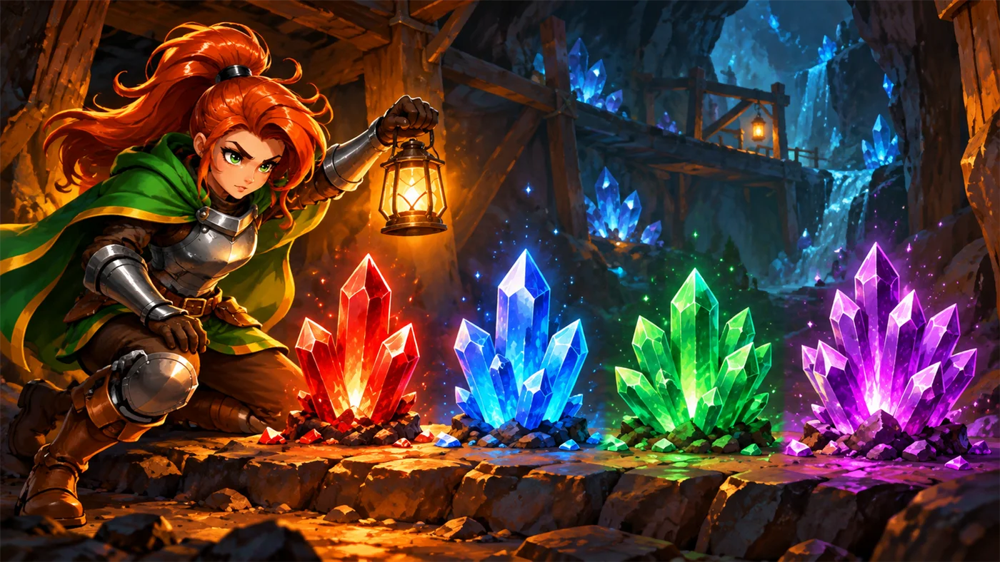
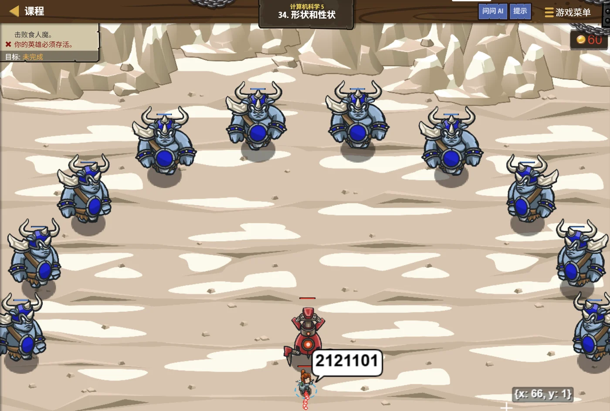

故事：矿道尽头立着一台魔法机器人，它只认二进制的命令。
闯入者正沿着矿道逼近，可敌人的血量和类型，写出来全是十进制的大数字。
机器人歪着头听不懂。贺舒曼在镜子里说：换个进制写给它看。
扣哒考级 · GESP PYTHON 三级 · 第 2 单元 | 符文矿坑 RUNEMARK MINE
七进制水晶 进制转换
Number Base Conversion

贺舒曼
镜中先知 · 你的向导
沿着暗河往上走，矿洞忽然豁然开朗。正中央悬着一块七棱水晶，慢悠悠地转着。
你绕着它走了一圈，越看越糊涂：每一面上刻的都是同一个数字，写法却完全不同。 第一面是
贺舒曼在镜子里看着你笑：它们真的一样。想知道为什么吗？那得从进制说起。
你绕着它走了一圈，越看越糊涂：每一面上刻的都是同一个数字，写法却完全不同。 第一面是
101，第二面是 5，第三面是
0b101……贺舒曼在镜子里看着你笑：它们真的一样。想知道为什么吗？那得从进制说起。
贺舒曼 · 镜中先知
上一单元我们学了"负数怎么存"，这一单元解决"数字怎么写"。别看它名字吓人——进制的全部秘密，就两个字：位权。搞懂位权，剩下的都是算术。
assets/illustrations/py-L3-02-01_seven_crystal.webp
【配图位】幽蓝矿洞中央悬浮着一块多棱水晶，每一棱的切面上刻着同一个数的不同写法（101101、55、45、2D），棱面旋转时数字逐一亮起；一名学徒举着矿灯仰头观察。
0 单元导语与目标
Unit Overview
0.1 学习目标
1学完这个单元，你将能……
- 说清"位权"和"基数"是什么意思
- 把任意进制的数展开成十进制
- 用"除基取余"把十进制转成任意进制
- 二进制与八进制、十六进制之间快速互换
- 看懂 Python 的
0b/0o/0x前缀 - 会用
bin() / oct() / hex() / int()做题
2对标 GESP 考纲（Python 三级）
- 掌握二进制、八进制、十进制、十六进制及其相互转换
- 理解位权与基数的概念，掌握按权展开求和的方法
- 掌握十进制转其他进制的短除法（除基取余、逆序排列）
- 了解 Python 中不同进制常量的书写方式与函数
0.2 考纲对照
| 本单元小节 | 对应考纲条目 | 真题常考形式 |
|---|---|---|
| 1 进制是什么 | 进制的基本概念 | 为什么"逢十进一"、进制的本质是什么 |
| 2 四种常用进制 | 二、八、十、十六进制 | 判断某种写法属于哪种进制 |
| 3 其他进制 → 十进制 | 按位权展开 | 给一个二进制或十六进制数，问等于十进制几 |
| 4 十进制 → 其他进制 | 除基取余法 | 把十进制数换算成二进制，问结果 |
| 5 快速互转 | 进制之间的转换 | 二进制与八进制、十六进制之间的速算 |
| 6 Python 里的进制 | 进制的程序表示 | 四种写法、以及转换函数的结果 |
1 进制到底是什么
What Is a Base
1.1 从"三百四十五"说起
先问你一个"废话"问题：345 这个数，为什么读作三百四十五？
因为它站在"十进制"这个规则里。而规则的核心是——每一个位置，都有它自己的分量。 这个分量就叫位权。
图 2（SVG）：位权就是"每个位置值多少"
两个关键词：
基数——这个进制一共用几个数字。十进制是 10，二进制是 2，八进制是 8，十六进制是 16。
位权——从右往左数第 i 位（从 0 开始），它的权重是"基数的 i 次方"。
把每一位上的数字乘上它的位权，再加起来，就得到这个数的大小。
位权——从右往左数第 i 位（从 0 开始），它的权重是"基数的 i 次方"。
把每一位上的数字乘上它的位权，再加起来，就得到这个数的大小。
1.2 进制的本质：数到几进位
打个比方：
十进制就像我们用十个手指头数数——数到第十个，手指不够用了，就在前面进一位、把手重新摊开。
二进制只有两根手指（0 和 1），数到第二个就得进位，所以它长得特别长。
"进制"说的就是这一件事：数到几，就该进位了。
二进制只有两根手指（0 和 1），数到第二个就得进位，所以它长得特别长。
"进制"说的就是这一件事：数到几，就该进位了。
所以"进制"这个听起来玄乎的词，其实只说了一件事：数到几进位。

安雅 · 红发队长
岗哨点名用十进制：数到 9，下一个就得进一位，因为手上有十根手指。要是我们外星朋友只有两根手指呢？那它数到 1 就得进位，这就是二进制。
进制不是数学难题，只是"数到几翻篇"的习惯。
2 四种常用进制
Four Common Bases
2.1 四种进制的对照
| 进制 | 基数 | 用到的数字 | Python 前缀 | 什么时候用 |
|---|---|---|---|---|
| 十进制 | 10 | 0~9 | 无 | 我们平时说数 |
| 二进制 | 2 | 0、1 | 0b | 计算机内部存储 |
| 八进制 | 8 | 0~7 | 0o | 简洁表达二进制（三位一组） |
| 十六进制 | 16 | 0~9、A~F | 0x | 简洁表达二进制（四位一组） |
2.2 十六进制里的 A~F
十六进制里的 A~F 是什么？
十六进制需要 16 个"数字符号"，可我们只有 0~9 这十个，
于是借来字母：A = 10、B = 11、C = 12、D = 13、E = 14、F = 15。
所以
所以
1F 里的 F 不是"字母"，而是数字 15。
图 3（SVG）：同一个数，四种进制写法——算法完全一样，只是基数不同
3 其他进制 → 十进制
To Decimal
3.1 按位权展开
方法只有一句话：按位权展开，然后加起来。
按权展开求值（四个例子）
手算
二进制 1101 → 1×8 + 1×4 + 0×2 + 1×1
= 8 + 4 + 0 + 1
= 13
八进制 172 → 1×64 + 7×8 + 2×1
= 64 + 56 + 2
= 122
十六进制 1F → 1×16 + 15×1 (F = 15)
= 16 + 15
= 31
四进制 321 → 3×16 + 2×4 + 1×1
= 48 + 8 + 1
= 57要点 位权从左往右是 基数的 n-1 次方 …… 基数的一次方、1
3.2 换算练习
assets/illustrations/py-L3-02-03_place_value.webp
【配图位】矿坑轨道上排着四节编号矿车，车厢上分别刻着 8、4、2、1；每节车厢里的矿石数量（0 或 1）乘以车身上的数字，最后倒进最右边一口大熔炉里汇总；一名矿工举着灯沿车厢走过并逐一点亮有矿石的车厢。
防错小技巧：
先把位权从左到右标在数字上方，再一位一位地乘。手算时这一步特别值得做——
标错了位权，后面全错。
比如
1101 是四位，位权从高到低就是 8、4、2、1。
4 十进制 → 其他进制
From Decimal
4.1 除基取余法
反过来就要用"短除法"：除基取余，直到商为 0，再把余数倒过来读。
图 5（SVG）：除基取余法——余数从下往上读，就是结果
再练三个（十进制转其他进制）
手算
45 → 二进制
45 ÷ 2 = 22 …… 1
22 ÷ 2 = 11 …… 0
11 ÷ 2 = 5 …… 1
5 ÷ 2 = 2 …… 1
2 ÷ 2 = 1 …… 0
1 ÷ 2 = 0 …… 1
倒着读 → 101101
45 → 八进制
45 ÷ 8 = 5 …… 5
5 ÷ 8 = 0 …… 5
倒着读 → 55
45 → 十六进制
45 ÷ 16 = 2 …… 13（D）
2 ÷ 16 = 0 …… 2
倒着读 → 2D口诀 除到商为 0 为止，余数从下往上读
4.2 余数为什么要倒着读
打个比方：
除基取余就像把一根木头一段段锯短——先锯下来的那一小段，是最"靠后"的一块。
换算时先得到的余数，其实是结果的最低位；
所以最后必须把余数从下往上倒着读，才得到正确的数。
换算时先得到的余数，其实是结果的最低位；
所以最后必须把余数从下往上倒着读，才得到正确的数。
assets/illustrations/py-L3-02-02_divide_remainder.webp
【配图位】矿洞里一台带漏斗与齿轮的矿石分装机：一名矿工把写有数字的石板从顶部投入，机器反复做除法，每次的余数作为一颗小矿石从侧面落到下方的传送带上；传送带上的小矿石自下而上渐渐堆成一摞，最上面一颗被一盏聚光灯照亮（表示这是最高位）；机身侧面刻着"除基取余"。
最容易错的一步：顺序。
第一次除出来的余数，是结果的最低位；最后一次的余数才是最高位。
所以必须"倒着读"。忘掉倒序，答案就正好反了个个儿。
所以必须"倒着读"。忘掉倒序，答案就正好反了个个儿。
5 二、八、十六的快速互转
Fast Conversion
5.1 三条黄金法则
考试里最常考的其实不是"十进制 ↔ 其他"，而是 二进制、八进制、十六进制三者之间的速转。 因为 8 = 2³、16 = 2⁴，所以它们之间可以"分组直译"，根本不用经过十进制。
5.2 分组直译速查
两条黄金法则：
二进制 → 八进制：每 3 位一组（不足左边补 0），每组直接读出 0~7。
二进制 → 十六进制：每 4 位一组（不足左边补 0），每组直接读出 0~F。
二进制 → 十六进制：每 4 位一组（不足左边补 0），每组直接读出 0~F。
图 7（SVG）：分组直译——这是考试里最省时间的办法
| 二进制（4 位） | 十六进制 | 二进制（3 位） | 八进制 |
|---|---|---|---|
| 0000 | 0 | 000 | 0 |
| 0001 | 1 | 001 | 1 |
| 0010 | 2 | 010 | 2 |
| 0011 | 3 | 011 | 3 |
| 0100 | 4 | 100 | 4 |
| 0101 | 5 | 101 | 5 |
| 0110 | 6 | 110 | 6 |
| 0111 | 7 | 111 | 7 |
| 1000 ~ 1111 | 8 ~ F | — | — |
欧曼 · 传奇巫师
我念咒语有个习惯：把长句子拆成一小节一小节，一节一节地念。二进制太长、太难记，八进制和十六进制就是替它分节的——三位一节、四位一节， 读起来立刻顺手。
所以别把它们当成三种陌生的东西，它们只是同一串 0 和 1 的不同断句方式。
6 Python 里的进制
Number Bases in Python
6.1 四种进制的写法
Python 给每种进制都准备了"写法"和"转换函数"：
| 写法 | 含义 | 等等于十进制 |
|---|---|---|
101 | 十进制（没有前缀） | 101 |
0b101 | 二进制（binary） | 5 |
0o101 | 八进制（octal） | 65 |
0x101 | 十六进制（hex） | 257 |
三个转换函数 + 一个万能解析
Python
n = 45
print(bin(n)) # 转成二进制字符串（带 0b 前缀）
print(oct(n)) # 转成八进制字符串（带 0o 前缀）
print(hex(n)) # 转成十六进制字符串（带 0x 前缀）
# 反过来：把字符串按指定进制解析成整数
print(int("101101", 2)) # 把 101101 当成二进制读
print(int("55", 8)) # 当成八进制读
print(int("2D", 16)) # 当成十六进制读OUTPUT 0b101101
0o55
0x2d
45
45
45
0o55
0x2d
45
45
45
6.2 转换函数
两个细节千万别错：
①
②
bin() / oct() / hex() 返回的都是字符串，
而且带前缀，输出是 0b101101 这个样子，别把 "0b" 当成数字的一部分；②
int(字符串, 进制) 里的第二个参数才是指定进制，
"2D" 这种带字母的只能配 16 进制用。
7 代码实战
Level Practice
关卡
形状和性状
进入关卡 →思路：用"除基数、取余数、倒着排"的办法，就能把十进制换成任意进制： 不断除以基数，把每一次的余数记下来，最后从下往上读。 这就是竖式换算的程序版本。


assets/stages/py-L3-02-stage1_shapes_traits.webp
【关卡截图位】请把《形状和性状》的游戏画面截图放到此处（放入 assets/stages/ 目录，文件名为 py-L3-02-stage1_shapes_traits.webp）。
重点示例：把一个十进制数换成三进制
Python
# 十进制 → 三进制：除 3 取余，余数倒着排
def toTernary(number):
result = ""
while number != 0:
remainder = number % 3 # ① 取余数
result = str(remainder) + result # ② 新余数接在"前面"
number = number // 3 # ③ 去掉这一位
return result
hero.say(toTernary(enemy.health)) # 把血量换成三进制报给机器人要点 余数要接在前面（因为最后才读最高位）；
// 是整除，把用掉的那一位丢掉
和本单元的关系：
换进制的三步——取余、落位、除基，和"十进制拆成个位十位百位"是同一套动作，
只是基数从 10 换成了 3 或 2。
把基数换成 2 就是二进制，换成 8 就是八进制——算法一模一样。
去扣哒世界闯这一关 →
把基数换成 2 就是二进制，换成 8 就是八进制——算法一模一样。
8 常见陷阱
Common Pitfalls

扣哒鸭 · 调试官
进制换算送分，也送命。四条，条条都是阅卷老师喜欢蹲的点。
1
除基取余忘了倒序。算出来是 1011，答案写成 1101。

扣哒鸭：第一次除出来的余数是最低位，最后一次才是最高位。
所以要从下往上读。我这有个笨办法：算完以后，用手指从最后一个余数往上划一遍再写答案。
正确做法：商变成 0 时停手，余数从下往上排
2
二进制转八进制时，按四位一组分了。结果怎么算都对不上。

扣哒鸭：记住这组数字：8 是 2 的三次方，16 是 2 的四次方。
所以八进制配三位、十六进制配四位。
分错了组，等于把句子断错了句读，意思全变。
分错了组，等于把句子断错了句读，意思全变。
正确做法：八进制 → 3 位一组；十六进制 → 4 位一组；不足时左边补 0
3
把
0o 当成"两个零"。把八进制写成了十进制。
扣哒鸭：八进制前缀是字母 o（octal），不是数字 0。
写成
00101 的话，Python 会当成十进制 101——差了十几倍。正确写法：
0o101 表示八进制的 1014
以为
bin(5) 返回的是数字 101。
扣哒鸭：它返回的是字符串
'0b101'，
带前缀、带引号。要拿它去做算术，会当场报错。正确理解：bin/oct/hex 返回字符串；要数字就用 int(字符串, 进制)
9 题目练习
Practice
第 1 题改编自 2026 年 9 月 · Python 三级 第 4 题，其余为原创练习题。
改编自 2026 年 9 月 · Python 三级 · 第 4 题单选题
在 Python 中，表达式
-0b1111 的十进制值是（ ）。A.15 B.−15 C.−1 D.−7
查看答案与详解
答案：B。
1×2³ + 1×2² + 1×2¹ + 1×2⁰ = 8 + 4 + 2 + 1 = 15；
前面再加负号，结果就是 −15。
注意区分：这里的负号是整个数的正负号，和"最高位当符号位"的补码不是一回事 ——
顺带记牢三个前缀：
对应小节6 Python 里的进制。
0b 前缀表示二进制，所以 0b1111 就是二进制的 1111：1×2³ + 1×2² + 1×2¹ + 1×2⁰ = 8 + 4 + 2 + 1 = 15；
前面再加负号，结果就是 −15。
注意区分：这里的负号是整个数的正负号，和"最高位当符号位"的补码不是一回事 ——
-0b1111 是 Python 的写法，而 1111 这 4 位补码表示的是 −1。顺带记牢三个前缀：
0b 二进制、0o 八进制、0x 十六进制。对应小节6 Python 里的进制。
原创练习题单选题
二进制数
11010 对应的十进制数是（ ）。A.24 B.26 C.28 D.52
查看答案与详解
答案：B。五位二进制，位权从左到右是 16、8、4、2、1：
易错点：D 项是把它当成二进制后又加错了（把 11010 看成 110100）。
对应小节3 其他进制 → 十进制。
1×16 + 1×8 + 0×4 + 1×2 + 0×1 = 16 + 8 + 2 = 26。易错点：D 项是把它当成二进制后又加错了（把 11010 看成 110100）。
对应小节3 其他进制 → 十进制。
原创练习题单选题
十进制数
45 转换成十六进制是（ ）。A.2D B.D2 C.54 D.2C
查看答案与详解
答案：A。用除基取余：
余数从下往上读 → 2D。
易错点：B 项是忘了倒序，最容易选错。
对应小节4 十进制 → 其他进制。
45 ÷ 16 = 2 …… 余 13（13 记作 D）2 ÷ 16 = 0 …… 余 2余数从下往上读 → 2D。
易错点：B 项是忘了倒序，最容易选错。
对应小节4 十进制 → 其他进制。
原创练习题单选题
二进制数
101101 转换成八进制是（ ）。A.45 B.55 C.65 D.2D
查看答案与详解
答案：B。三位一组从右往左分：
左边一组 101 = 5，右边一组 101 = 5，合起来就是 55（八进制）。
提示：D 项是这个数转成十六进制的结果（四位一组：0010 1101 → 2D），别混了。
对应小节5 二、八、十六的快速互转。
101 | 101左边一组 101 = 5，右边一组 101 = 5，合起来就是 55（八进制）。
提示：D 项是这个数转成十六进制的结果（四位一组：0010 1101 → 2D），别混了。
对应小节5 二、八、十六的快速互转。
原创练习题判断题
在 Python 中，表达式
int("101", 2) 的值是 5。（ ）查看答案与详解
答案：正确（√）。
对比：
对应小节6 Python 里的进制。
int("101", 2)
的意思是"把字符串 101 按二进制解读"，即
1×4 + 0×2 + 1×1 = 5。对比：
int("101") 才是十进制 101。对应小节6 Python 里的进制。
原创练习题单选题
下列 Python 代码执行后，输出的结果是（ ）。
1 print(hex(255))
A.255 B.0xff C.ff D.0o377
查看答案与详解
答案：B。255 =
易错点：C 项忘了前缀；D 项是八进制，255 的八进制是 377。
对应小节6 Python 里的进制。
1111 1111（二进制），
四位一组就是 F 和 F，即十六进制的 FF。hex() 返回的是带前缀的字符串，
且字母小写，所以打印出来是 0xff。易错点：C 项忘了前缀；D 项是八进制，255 的八进制是 377。
对应小节6 Python 里的进制。
原创练习题判断题
十六进制数
1A 的十进制值是 26。（ ）查看答案与详解
答案：正确（√）。按权展开：
牢记：A=10、B=11、C=12、D=13、E=14、F=15。
对应小节2 四种常用进制；3 其他进制 → 十进制。
1×16 + A×1，而 A = 10，
所以 16 + 10 = 26。牢记：A=10、B=11、C=12、D=13、E=14、F=15。
对应小节2 四种常用进制；3 其他进制 → 十进制。
原创练习题编程题
题目要求：编写程序，输入一个十进制正整数 n，
依次输出它的二进制、八进制和十六进制表示（都按 Python 的默认格式输出，即带前缀），一行一个。
查看参考答案与要点
n = int(input("请输入一个正整数："))
print(bin(n)) # 二进制，带 0b 前缀
print(oct(n)) # 八进制，带 0o 前缀
print(hex(n)) # 十六进制，带 0x 前缀
运行示例：输入 45 → 输出 0b101101、
0o55、0x2d。
要点：
① 三个函数都返回字符串，直接 print 即可；
② 前缀 0b / 0o / 0x 会自动带上；
③ 十六进制里的字母是小写的，如果要大写可以再用
.upper() 转换。
对应小节6 Python 里的进制。
10 本单元小结
Unit Summary
贺舒曼 · 镜中先知
这一单元其实只有两句话：一、其他进制转十进制——按位权展开再相加。
二、十进制转其他进制——除基取余，倒着读。
再加上一个"分组直译"的巧劲（八进制三位、十六进制四位）， 你在考场上就能省下一半时间。
你在七棱水晶旁收获了什么
- 基数与位权——基数是"用几个数字"，位权是"每个位置值多少"。
- 四种常用进制——十进制、二进制、八进制、十六进制；十六进制借用了 A~F。
- 转十进制——按位权展开求和，一位一位乘了再加。
- 转其他进制——除基取余，除到商为 0，余数倒序排列。
- 分组直译——二进制 ↔ 八进制每 3 位一组；二进制 ↔ 十六进制每 4 位一组。
- Python 前缀——
0b二进制、0o八进制、0x十六进制。 - 转换函数——
bin / oct / hex返回带前缀的字符串；int(字符串, 进制)反向解析。